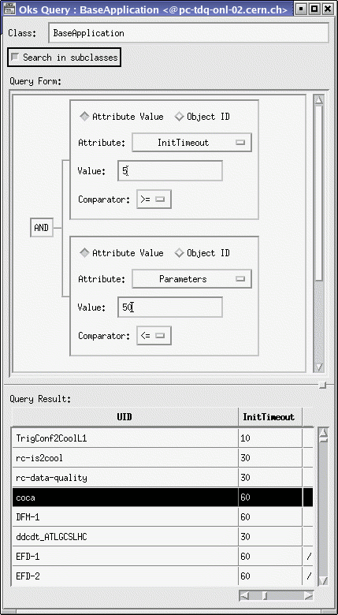
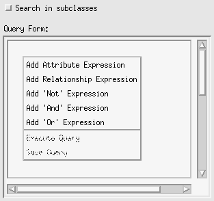
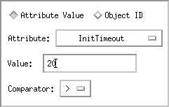
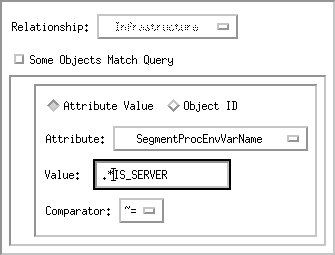
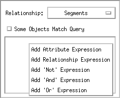
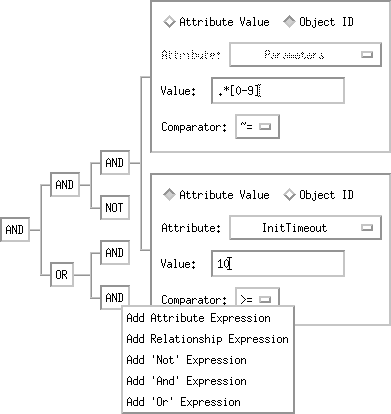
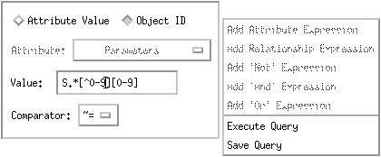
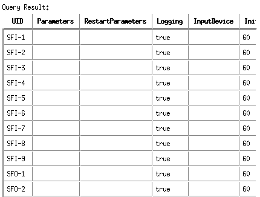
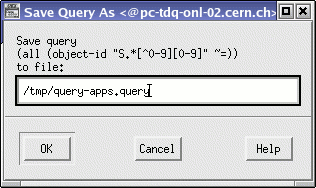

OKS Data Editor
Query Window
The
OKS Data Editor provides database query builder. Created query can be
used by user application via OKS and config APIs. An OKS query can be
edited visually, saved in a file, loaded from file and executed. The
query window consists of two main parts: the graphical query
constructor and the result table:

Building query
To begin building a query, select desired class from the main window or from the class window, press right mouse
button and select [Query] item from popup menu.
OKS Data Editor will bring up query window with empty query form.
It is necessary to decide, if the query scope is limited by objects of
the selected class, or also include objects of derived classes. This
can be changed using toggle button [Search in subclasses]: if
it is
selected, the query will be performed over class and all subclasses,
otherwise scope will be one class only.
Then press
right mouse button in empty query form:

The attribute expression allows to run query selecting objects by
attribute or UID value. The relationship expressions allow to apply
attribute expression on referenced objects. The "Not", "And"
and "Or"
expressions allow to build query using arbitrary number of attribute
and relationship expressions.
Attribute Expression
The attribute expression query form is simplest query form
and it describes search by value of single attribute, for example
"search all objects with initialisation timeout greater 20":

This form
consists of the following items:
- Selection radio-group "Attribute Value" vs. "Object
ID". If "Attribute Value" is selected, the value of
attribute is
compared.
Else, the object UID is compared.
- Attribute
option menu allows to select an attribute defined in class (disabled,
if the "Object ID" is selected above).
- Value text field allows to put any desired value of attribute
that will
be used during the search;
- Comparator allows to define a function that will be used by query
and predefined functions are:
- "=" - equal,
- "!=" - not equal,
- "~=" - like (use regular expression),
- "<=" - less or equal,
- ">=" - great or equal,
- "<" - less,
- ">" - great.
The attribute name can be changed at any moment. If the attribute type
of new selected attribute is different from previous one, the value can
be converted to default of selected attribute type.
Relationship Expression
The relationship expression query form describes search
through relationship attribute using nested query form, for example "search
all segments which have infrastructure applications defining
infrastructure environment variables with names ended by IS_SERVER":

This form
consists of the following items:
- Relationship option menu allows to select a relationship defined
in class.
- "Some Objects Match Query" vs. "All Objects Match
Query" toggle button defines either
an object referenced by relationship matches query from nested query
form
or at least one object referenced by relationship matches the query.
- Nested Query
Form allows to build nested query expression (e.g. attribute or even
nested relationship expression). Press right mouse button
to see popup menu and use the same rules to build query as for top
level query form. Note, once the nested form is inserted, it is not
possible to change the relationship name (the option menu becomes
disabled).

Logical Expressions
Logical Query Expression Form can be used with any type
of query form to build complex query expression. There are three types
of logical query expressions:
- "Not" query expression
- "And" query expression
- "Or" query expression
The "Not" query expression form can be concatenated
with any another single query expression form. The "And" query
expression form and "Or" query expression form can be used with
any two
or more query expression forms.
It is possible to build multi-level tree
structure that consists of logical query expression forms. The leaves
of that structure must be either attribute
or relationship query expression
form. An incomplete tree and popup menu is shown below:

Executing Query
To execute a complete OKS query it is necessary either to create it
(see Building Query) or to load already
existing one (see Loading
Query). Press right mouse button on any free space of the query
form and
select [Execute Query] item from popup menu:

The result of
query will
appear in the query result table:

Saving Query
To save a complete query to file press right mouse button on any free
space of Query Form and select Save Query item from popup menu. This
will bring up dialog with prompt for query file name. Enter desired
filename and press OK button, e.g.:

Note, incomplete query can not be saved.
The format of the query file is simple (it looks like a statement of
LISP language) and can be edited manually by any text editor.
An OKS query does not strongly depend from class type. If two classes
have an attribute with the same name, possibly a query can be applied
to both classes.
Loading Query
To load a query, select query related class from main window or class
window, press right mouse button and
select [Load Query] item from popup menu. The OKS Data
Editor will bring up Open OKS Query window. Choose query file name and
the Query window with stored query will appear.
Home - Next
- Index
Modified 11-JUN-2009
Author Igor Soloviev